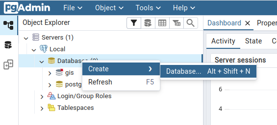
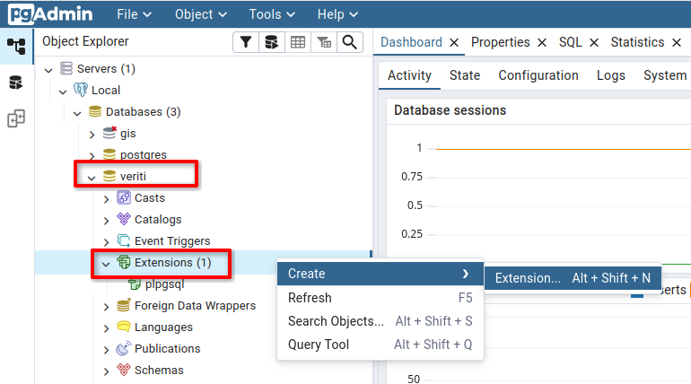
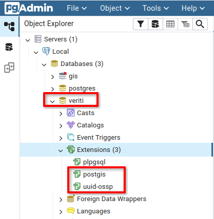

Veriti è un plugin QGIS, sviluppato da OPENGIS.ch. Veriti, permette di importare i dati provenienti dal portale PR cantonale in QGIS per modificarli e permette di verificare che i vincoli di integrità tra i dati siano conformi alle direttive cantonali (documento Descrizione del geodato e della sua trasmissione al Cantone).
Releases
| Versione | Data | Modifiche |
|---|---|---|
| 3.0.0 | 07.11.2019 | Prima versione per QGIS 3 |
| 3.0.1 | 11.11.2019 | Corregge creazione svg path su Windows |
| 3.0.2 | 11.11.2019 | Corregge errore encoding su Windows |
| 3.1.0 | 13.11.2019 | Validazione form nell'import dialog, aggiunta di campi \"joinati\" con simbolo e piano grafico nelle geometrie, implementazione della funzione importa shapefile |
| 3.1.1 | 19.11.2019 | Mostra messaggi di errore comprensibili se non trova Java o non è la versione corretta |
| 3.2.0 | 20.11.2019 | Implementa la maschera per gestire gli attributi delle definizioni di zona e elemento |
| 3.2.1 | 22.11.2019 | Modifica il Vincolo 24. Adesso è: Una definizione in vigore deve avere almeno una geometria in vigore o nuova |
| 3.3.0 | 27.11.2019 | Corregge un problema che impediva di copiare geometrie e aggiunge il pulsante per ricreare tutte le relazioni con i piani grafici |
| 3.3.1 | 28.11.2019 | Corregge errore encoding su Windows durante export e chiede di esportare solamente come .itf |
| 3.3.2 | 24.01.2020 | Corregge l'errore quando si seleziona un simbolo se nessuna geometria di una determinata definizione di elemento comunale è assegnata a un piano grafico |
| 3.3.3 | 20.02.2020 | Corregge errore in attributi elemento |
| 3.3.4 | 20.02.2020 | Imposta titolo del progetto |
| 3.3.5 | 24.03.2020 | Corregge problema con valori vuoti nella tabella gestione attributi e altre piccole correzioni |
| 3.3.6 | 06.05.2020 | Nuovo link per la documentazione (http://veriti.opengis.ch/) |
| 3.4.0 | 21.10.2021 | Compatibilità con VeriGR |
| 3.4.1 | 21.10.2021 | Modifiche documentazione e deploy script |
| 3.4.2 | 21.10.2021 | VeriGR |
| 3.4.3 | 26.10.2021 | Aggiunta simbologia VeriGR |
| 3.4.4 | 02.11.2021 | Gestione automatica simbologia VeriGR |
| 3.4.5 | 05.11.2021 | Simbologia usando Darstellencode in VeriGR |
| 3.4.7 | 06.11.2021 | Installazione automatica di ili2pg migliorata |
| 3.4.8 | 26.11.2021 | Ignora Kantonalen Typen topics in VeriGR export |
| 3.4.9 | 26.11.2021 | Imposta widgets e valori di default in VeriGR |
| 4.1.6 | 02.06.2025 | Aggiornamento delle dipendenze a ili2db 5.3.1 e aggiunta di una finestra di validazione INTERLIS |
| 4.1.7 | 03.07.2025 | Migrazione automatica dei progetti 3.x |
| 4.2.1 | 24.09.2025 | Piccole correzioni relative shape file import e dialogo impostazioni |
| 4.3.0 | 10.03.2026 | Plugin pronto per QGIS 4, correzioni simbologia VeriGR |
Requisiti tecnici
- QGIS 3 (3.4 o superiore)
- Java JDK
1.8.0o superiore - PostgreSQL 9.4 o superiore PostGIS 3.1 o superiore
Definizione dei termini
- Veriti
- Progetto QGIS
- Modello INTERLIS
- File data transfer INTERLIS
Installazione
QGIS
Scaricare e installare QGIS secondo le indicazioni di http://www.qgis.org.
PostgreSQL
Scaricare e installare PostgreSQL secondo le indicazioni di https://www.postgresql.org/.
Su windows è necessario clickare l'apposita checkbox nell'installer "Stack builder" per installare l'estensione spaziale PostGIS
Setup della banca dati
Per impostazione di default Veriti utilizza la banca dati veriti in
modo da conservare i dati separati da eventuali altre applicazioni che
utilizzano PostgreSQL.
Setup tramite SQL
Per creare il database e installare le estensioni
necessarie è sufficiente digitare all'interno di una query shell, ad
esempio in pgAdmin, i seguente comandi:
CREATE DATABASE veriti;
CREATE EXTENSION postgis;
CREATE EXTENSION "uuid-ossp";
Setup tramite pgAdmin
In alternativa è possibile utilizzare la GUI di pgAdmin:
- Clickare con il tasto destro su
Databases->Create->Database.... - Creare un database con nome
veriti.

Il database creato apparirà nella lista.
- Clickare con il tasto destro su Extensions-> Create-> Extension...
- Cercare e aggiungere le estensioni postgis e uuid-ossp

Le estensioni appariranno nella lista:

Nota: Se postgisnon si trova, significa che l'estensione non è stata
installata. Eseguire nuovamente l'installer di PostgreSQL e
assicurarsi di installare l'estensione postgis.
Veriti
Lanciare QGIS e aprire il gestore di plugin di QGIS, tramite il menu
Plugins
→ Gestisci e installa plugin…
Scegliere Impostazioni, Aggiungi… e inserire i
dati del repository contenente il plugin VeriTi:
- Nome: Veriti Repository (o qualsiasi altro nome)
- URL: https://download.opengis.ch/repos/veriti/plugins.xml
Premendo su OK, verranno richieste le credenziali del repository. A
questo punto scegliere Tutto nella barra a sinistra e
installare il Veriti.
Passaggio da Veriti 3 a Veriti 4
Il passaggio da Veriti 3 a Veriti 4 comporta un aggiornamento importante
della libreria INTERLIS utilizzata ili2db dalla versione 3.x alla 5.x
con delle ripercussioni sulla compatibilità dei progetti salvati in banca
dati.
I progetti creati con VeriTi versione <4.0.0 devono essere migrati. All'
apertura di un vecchio progetto un dialogo del plugin offre la possibilità
di migrare automaticamente il progetto. Lo schema originale viene rinominato
con l'aggiunta di un suffisso _backup_3xe funge da backup.
In alternativa la migrazione può essere effettuata a mano con i seguenti passaggi:
- Esportazione del progetto in formato .itf (oppure .xtf per VeriGR)
- Eliminazione dello schema dalla banca dati (soltanto se si vuole mantenere lo stesso nome)
- Re-importazione del progetto dal file .itf tramite l'utensile 'Importa INTERLIS'
Passaggio da Veriti 2 a Veriti 3
Il passaggio da Veriti 2 a Veriti 3 comporta molte novità e miglioramenti:
- è possibile generare un progetto QGIS partendo dai dati importati nella banca dati, una sola volta tramite gli strumenti di Veriti (quello che nella versione precedente si faceva con \"base -> base\" e in seguito salvare e caricare unicamente il progetto QGIS.
- la simbologia cantonale dei piani regolatori è ora integrata direttamente nel plugin e viene installata automaticamente in QGIS.
- molte modifiche sotto il cofano, che permettono di avere impostazioni e installazione semplificata e risolvere i problemi di incompatibilità che esistevano con la versione precedente e facilitano lo sviluppo di nuove funzionalità.
- è necessaria la creazione di un solo utente della banca dati.
- strumenti specifici di Veriti come la maschera per l'associazione dei piani grafici, completamente riscritte e più comode da utilizzare.
- documentazione online sempre aggiornata all'ultima versione.
Sebbene Veriti 3 sia in grado di mostrare anche i progetti caricati nella banca dati con Veriti 2, è consigliabile lavorare in Veriti 3 solamente con progetti importati con Veriti 3.